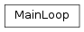

cxflow¶cxflow base module
MainLoop:
cxflow main loop for training and model inference.cxflow.MainLoop(model, dataset, hooks=(), extra_streams=(), on_unused_sources='warn', fixed_batch_size=None, skip_zeroth_epoch=False)[source]¶Bases: object
cxflow main loop for training and model inference.
PREDICT_STREAM = 'predict'¶Predict stream name.
TRAIN_STREAM = 'train'¶Train stream name.
UNUSED_SOURCE_ACTIONS = ['ignore', 'warn', 'error']¶Possible actions to be taken when a stream source is unused by the trained model.
__init__(model, dataset, hooks=(), extra_streams=(), on_unused_sources='warn', fixed_batch_size=None, skip_zeroth_epoch=False)[source]¶| Parameters: |
|
|---|
_check_sources(batch)[source]¶Check for unused and missing sources.
| Parameters: | batch (Dict[str, object]) – batch to be checked |
|---|---|
| Raise: | ValueError: is a source is missing or unused and self._on_unused_sources is set to error |
| Return type: | None |
_create_epoch_data()[source]¶Create empty epoch data double dict.
| Return type: | Mapping[str, Mapping[str, Iterable[Any]]] |
|---|
_run_epoch(stream, train, stream_name)[source]¶Iterate through the given stream and evaluate/train the model with the received batches.
Calls cxflow.hooks.AbstractHook.after_batch() events.
| Parameters: | |
|---|---|
| Return type: |
|
_run_zeroth_epoch(streams)[source]¶Run zeroth epoch on the specified streams.
| Parameters: | streams (Iterable[str]) – stream names to be evaluated |
|---|---|
| Return type: | None |
evaluate_stream(stream, stream_name)[source]¶Evaluate the given stream.
| Parameters: | |
|---|---|
| Return type: |
|
get_stream(stream_name)[source]¶Get a stream iterator with the given name.
| Parameters: | stream_name (str) – name of the stream |
|---|---|
| Raises: | AttributeError – if the dataset does not provide the function creating the stream |
| Return type: | Iterable[Mapping[str, Iterable[Any]]] |